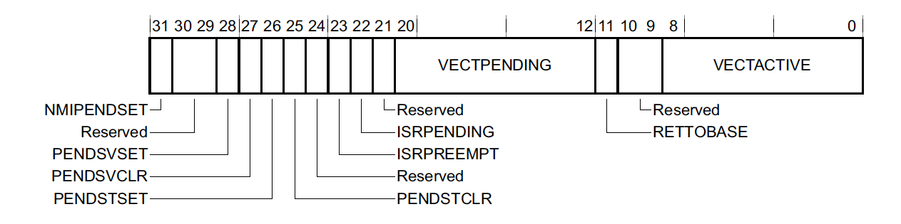
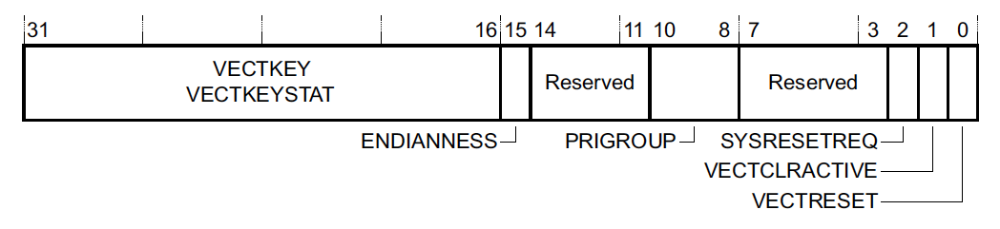
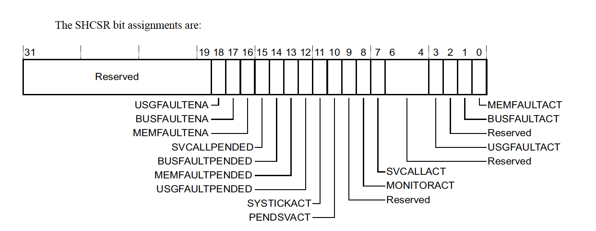
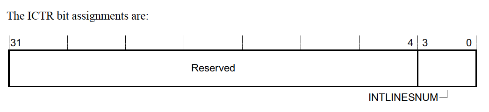

A Practical guide to ARM Cortex-M Exception Handling
几乎所有嵌入式系统都在某种程度上依赖于处理异步事件的能力。 例如，它从加速度计读取外部传感器数据，以便计算步数 或处理周期性计时器事件以触发RTOS的上下文切换。
在本文中，我们将深入研究ARM Cortex-M 的Exception Model如何支持异步事件的处理。 本文将介绍支持的不同异常类型、术语(NVIC、ISR、Priority)、configuration registers及其常用设置、与Exception有关的Advanced Topic以及一些用C编写的examples。
注意:在大多数情况下，所有Cortex-M处理器(ARMv6-M、ARMv7-M和ARMv8-M体系结构)的异常处理机制是相同的。本文将在下面的相关章节中指出它们的差异。
ARM Exception Model Overview
ARM specification将Exception定义为“a condition that changes the normal flow of control in a program” 1.
你会经常看到"Exception"和"Interrupt"交替出现. 在ARM文档中, “Interrupt"用来描述"Exception"的一种. Exception包含以下3部分标识信息:
- Exception Number - 表示特定类型Exception的唯一编号(从1开始). 这个编号也用作Vector Table的offset, 这种类型的Exception对应routine的address可以在这里找到. 这样的routine通常被称为Exception Handler或者Interrupt Service Routine (ISR),它是在Exception触发时会被执行的函数. 当Exception被触发时,ARM硬件会自动的从Vector Table中寻找对应的函数指针并执行.
- Priority Level / Priority Number - 每种Exception都有一个优先级. 大部分exception的Priority Number是可配置的. 反直觉的地方是, 更小的priority number意味着更高的优先级. 所以如果priority level 1的exception和priority level 2的exception同时发生, priority level 1的exception会先被处理. 当本文说一个exception有最高优先级时, 意味着这个exception有最小的Priority Number. 如果两个exception有相同的Priority Number, Exception Number更小的那个会先被处理.
- Synchronous 或 Asynchronous - 有一些exception触发时被立即被处理(例如
SVCall), 称为 synchronous. 另一些exception触发时不会被立刻处理, 称为 asynchronous.
一个exception可以处于以下4种状态中的一种:
- Pending - MCU检测到了exception并进行了调度,但是还没有调用handler.
- Active - MCU已经开始执行handler但是还没执行结束. handler处于这种状态下的原因可能是因为被更高优先级的handler抢占.
- Pending & Active - 只有asynchronous exceptions可能处于这种状态, 这种状态基本上意味着MCU正在处理一个相同类型的exception.
- Inactive - exception既不处于Pending也不处于Active.
某些exception可以选择性的Enabled或Disabled.
注意: 即使一个exception已经disabled, 它仍然可以处于pending状态. 一旦enabled, 它就会转移到active状态. 所以, 在启用一个interrupt时, 最好清空所有pending状态下的exception.
接下来探讨ARM Cortex-M MCU上不同类型的exception.
Built in Exceptions
These are exceptions that are part of every ARM Cortex-M core. The ARM Cortex-M specifications reserve Exception Numbers 1-15, inclusive, for these.
NOTE: Recall that the Exception Number maps to an offset within the Vector Table. Index 0 of the Vector Table holds the reset value of the Main stack pointer. The rest of the Vector Table, starting at Index 1, holds Exception Handler pointers.
Six exceptions are always supported and depending on the Cortex-M variant, additional handlers will be implemented as well. The minimum set is:
- Reset - This is the routine executed when a chip comes out of reset. More details can be found within the Zero to main() series of posts.
- Non Maskable Interrupt (
NMI) - As the name implies, this interrupt cannot be disabled. If errors happen in other exception handlers, a NMI will be triggered. Aside from theResetexception, it has the highest priority of all exceptions. - HardFault - The catchall for assorted system failures that can take place such as accesses to bad memory, divide-by-zero errors and illegal unaligned accesses. It’s the only handler for faults on the ARMv6-M architecture but for ARMv7-M & ARMv8-M, finer granularity fault handlers can be enabled for specific error classes (i.e
MemManage,BusFault,UsageFault). 2 - SVCall - Exception handler invoked when an Supervisor Call (
svc) instruction is executed. - PendSV & SysTick - System level interrupts triggered by software. They are typically used when running a RTOS to manage when the scheduler runs and when context switches take place.
External Interrupts
ARM cores also support interrupt lines which are “external” to the core itself. These interrupt lines are usually routed to vendor-specific peripherals on the MCU such as Direct Memory Access (DMA) engines or General Purpose Input/Output Pins (GPIOs). All of these interrupts are configured via a peripheral known as the Nested Vectored Interrupt Controller (NVIC).
The Exception Number for external interrupts starts at 16. The ARMv7-M reference manual has a good graphic which displays the Exception number mappings:

Registers used to configure Cortex-M Exceptions
Exceptions are configured on Cortex-M devices using a small set of registers within the System Control Space (SCS). An in-depth list of all the registers involved in exception handling can be found in the ARMv7-M reference manual 3. A great way to build out an understanding of how the exception subsystem works is to walk through the registers used to configure it. In the sections below we will explore the highlights.
If you already have a good feel for Cortex-M exception configuration, I’d recommend skipping to the advanced topics section which covers a few of the more subtle details about Cortex-M exceptions worth noting or to test your knowledge with a more complex configuration example!
Interrupt Control and State Register (ICSR) - 0xE000ED04
ICSR bit assignments:

This register lets one control the NMI, PendSV, and SysTick exceptions and view a summary of the current interrupt state of the system.
The most useful status fields are:
- VECTACTIVE - The Exception Number of the currently running interrupt or 0 if none are active. This number is also stored in the
IPSRfield of the Program Status Register (xPSR). - RETTOBASE - A value of 0 means another interrupt is active aside from the currently executing one. This basically reveals whether or not pre-emption took place. This field is not implemented in ARMv6-M devices.
- VECTPENDING - The Exception Number of the highest outstanding pending interrupt or 0 if there is None.
Application Interrupt and Reset Control Register (AIRCR) - 0xE000ED0C
AIRCR bit assignments:

The highlights with respect to exceptions are:
- SYSRESETREQ - Writing 1 will trigger a system reset resulting in the System Reset Handler getting invoked.
- PRIGROUP - This field lets you split exception priorities into two parts known as the group priority and subpriority. The setting here indicates how many bits make up the subpriority. The group priority is used to control which interrupts can preempt one another. The subpriority controls the order in which exceptions in the same group will be processed. This field is not implemented in ARMv6-M based devices. This can be helpful if you only want certain groups of interrupts to be able to preempt one another.
NOTE: In order to issue a write to this register, the
VECTKEYfield must be set to0x05FA.
System Handler Priority Register (SHPR1-SHPR3) - 0xE000ED18 - 0xE000ED20
This bank of registers allows for the priority of system faults with configurable priority to be updated. Note that the register bank index starts at 1 instead of 0. This is because the first exception numbers (corresponding to Reset, NMI, and Hardfault, respectively) do not have a configurable priority so writing to anything in SHPR0 has no effect.
Each priority configuration occupies 8 bits of a register bank. That means the configuration for Exception Number 11, SVCall, would be in bits 24-32 of SHPR2. The default priority value for all System Exceptions is 0, the highest configurable priority level. For most applications, it’s not typical to need and change these values.
System Handler Control and State Register (SHCSR) - 0xE000ED24
This register lets you view the status of or enable various built in exception handlers:

NOTE: For ARMv6-M devices the only value which is implemented is
SVCALLPENDED
Interrupt Controller Type Register (ICTR) - 0xE000E004
This register allows you to determine the total number of external interrupt lines supported by an implementation. For ARMv6-M devices (Cortex-M0, Cortex-M0+), this register is not implemented because the number is always 32. For other Cortex-M MCUs, up to 496 lines may be supported! The layout of the register looks like this:

The exact number of interrupts supported is easily computed as 32 * (INTLINESNUM + 1)
NVIC Registers
The NVIC has sets of registers for configuring the “external” interrupt lines. The address ranges are allocated to support the maximum number of external interrupts which can be implemented, 496, but usually a smaller set of the registers will be implemented.
Four of the register types have a single bit allocated per external interrupt. Each type is in a contiguous bank of 32-bit registers. So if we want to configure external interrupt 65, the configuration will be bit 1 of the 3rd 32-bit register in the bank. Recall external interrupts start at offset 16 in the vector table so the Exception Number (index in the vector table) for this interrupt will be 16 + 65 = 81.
NOTE 1: Utilizing an external interrupt is usually a little bit more involved than it first appear to be. In addition to configuring the NVIC registers for the interrupt, you usually need to configure the MCU specific peripheral to generate the interrupt as well.4
NOTE 2: While less common in real-world applications, it’s also possible to re-purpose any NVIC interrupt and trigger it via software. We’ll walk through an example of this in the code examples later in the article.
Interrupt Set-Enable (NVIC_ISER) and Clear-Enable (NVIC_ICER) Registers
NVIC_ISER0-NVIC_ISER15:0xE000E100-0xE000E13CNVIC_ICER0-NVIC_ICER15:0xE000E180-0xE000E1BC
Writing a 1 to the correct bit offset of the register pair will enable or disable the interrupt and a read will return 1 if the interrupt is enabled.
Interrupt Set-Pending (NVIC_ISPR) and Clear-Pending (NVIC_ICPR) Registers
NVIC_ISPR0-NVIC_ISPR15:0xE000E200-0xE000E23CNVIC_ICPR0-NVIC_ICPR15:0xE000E280-0xE000E2BC
Writing a 1 to the correct bit offset of the register pair will set or clear the pending state of the interrupt and a read will return 1 if the interrupt is already pending.
Interrupt Active Bit Registers (NVIC_IABR)
NVIC_IABR0-NVIC_IABR15:0xE000E300-0xE000E33C
A read only bank of registers which return whether or not the interrupt is active. One thing to note is this register is not implemented in the ARMv6-M architecture (Cortex-M0 & Cortex-M0+).
Interrupt Priority Registers (NVIC_IPR)
NVIC_IPR0-NVIC_IPR123:0xE000E400-0xE000E5EC
The final NVIC configuration register is used to configure the priority of the interrupt. 8 bits are used to configure the priority of each interrupt. The number of supported priority levels is implementation defined and is in the range of 4-256. When less than 256 priority levels are implemented, the lower bits in the field read-as-zero. So, somewhat confusingly, if only 2 bits are implemented, the valid values from highest priority to lowest priority would be 0b000.0000 (0x0), 0b0100.0000 (0x40), 0b1000.0000 (0x80) and 0b1100.0000 (0xC0).
Software Triggered Interrupt Register (STIR) - 0xE000EF00
This register can be used to set an NVIC interrupt to pending. It’s equivalent to setting the appropriate bit in the NVIC_ISPR to 1. The value that needs to be written to the register is the External Interrupt Number (Exception Number - 16). This register is not implemented for the ARMv6-M architecture
Advanced Exception Topics
Exception Entry & Exit
One of my favorite parts about ARM exception entry is that the hardware itself implements the ARM Architecture Procedure Calling Standard (AAPCS). 5 The AAPCS specification defines a set of conventions that must be followed by compilers. One of these requirements is around the registers which must be saved by a C function when calling another function. When an exception is invoked, the hardware will automatically stack the registers that are caller-saved. The hardware will then encode in the link register ($lr) a value known as the EXC_RETURN value. This value tells the ARM core that a return from an exception is taking place and the core can then unwind the stack and return correctly to the code which was running before the exception took place
By leveraging these features, exceptions and thread mode code can share the same set of registers and exception entries can be regular C functions! For other architectures, exception handlers often have to be written in assembly.
Tail-Chaining
Usually when exiting an exception, the hardware needs to pop and restore at least eight caller-saved registers. However, when exiting an ISR while a new exception is already pended, this pop and subsequent push can be skipped since it would be popping and then pushing the exact same registers! This optimization is known as “Tail-Chaining”.
For example, on a Cortex-M3, when using zero wait state memory, it takes 12 clock cycles to start executing an ISR after it has been asserted and 12 cycles to return from the ISR upon its completion. When the register pop and push is skipped, it only takes 6 cycles to exit from one exception and start another one, saving 18 cycles in total!
Late-arriving Preemption
The ARM core can detect a higher priority exception while in the “exception entry phase” (stacking caller registers & fetching the ISR routine to execute). A “late arriving” interrupt is detected during this period. The optimization is that the higher priority ISR can be fetched and executed but the register state saving that has already taken place can be skipped. This reduces the latency for the higher priority interrupt and, conveniently, upon completion of the late arriving exception handler, the processor can then tail-chain into the initial exception that was going to be serviced.
Lazy State Preservation
ARMv7 & ARMv8 devices can implement an optional Floating Point Unit (FPU) for native floating point support. This comes with the addition of 33 four-byte registers (s0-s31 & fpscr). 17 of these are “caller” saved and need to be dealt with by the ARM exception entry handler. Since FPU registers are not often used in ISRs, there is an optimization (“lazy context save”)6 that can be enabled which defers the actual saving of the FPU registers on the stack until a floating point instruction is used in the exception. By deferring the actual push of the registers, interrupt latency can usually be reduced by the push and pop of these 17 registers!
A full discussion of FPU stacking optimizations is outside the scope of this article but better managing how the registers are stacked can also be a very helpful tool for reducing stack overflows and memory usage in embedded environments … Preserving FPU state across RTOS context switches requires an additional 132 bytes (33 registers) of data to be tracked for each thread! For further reading, ARM wrote a great application note highlighting the lazy preservation FPU features.7
Execution Priority & Priority Boosting
If no exception is active, the current “execution priority” of the system can be thought of as being the “highest configurable priority level” + 1 – essentially meaning if any exception is pended, the currently running code will be interrupted and the ISR will run.
There are a few ways in software that the “execution priority” can be manipulated to be above the default priority of thread mode or the exception that is active. This is known as “priority boosting”. This can be useful to do in software when running code that cannot be interrupted such as the logic dealing with context switching in a RTOS.
Priority boosting is usually controlled via three register fields:
- PRIMASK - Typically configured in code using the CMSIS
__disable_irq()and__enable_irq()routines or thecpsid iandcpsie iassembly instructions directly. Setting the PRIMASK to 1 disables all exceptions of configurable priority. This means, onlyNMI,Hardfault, &Resetexceptions can still occur. - FAULTMASK - Typically configured in code using the CMSIS
__disable_fault_irq()and__enable_fault_irq()routines or thecpsid fandcpsie fassembly instructions directly. Setting the FAULTMASK disables all exceptions except theNMIexception. This register is not available for ARMv6-M devices. - BASEPRI- Typically configured using the CMSIS
__set_BASEPRI()routine. The register can be used to prevent exceptions up to a certain priority from being activated. It has no effect when set to 0 and can be set anywhere from the highest priority level, N, to 1. It’s also not available for ARMv6-M based MCUs.
Interruptible-continuable instructions
Most ARM instructions run to completion before an interrupt is executed and are atomic. For example, any aligned 32-bit memory access is an atomic operation. However, to minimize interrupt latency, some of the longer multi-cycle instructions can be aborted and re-started after the exception completes. These include divide instructions (udiv & sdiv) and double word load/store instructions (ldrd & strd).
Some instructions are also “interruptible-continuable” which means they can be interrupted but will resume from where they left off on exception return. These include the Load and Store Multiple registers instructions (ldm and stm). This feature is not supported for ARMv6-M and instead the instructions will just be aborted and restarted.
NOTE: It’s generally a good idea to refrain from using load-multiple or store-multiple instructions to memory regions or variables where repeated reads or writes could cause issues or to guard these accesses in a critical section by disabling interrupts.
Code Examples
For this setup we will use a nRF52840-DK8 running the blinky demo application from the v15.2 SDK9 with a modified main.c that can be found here. However, you should be able to run similar code snippets on pretty much any Cortex-M MCU.
We’ll use SEGGER’s JLinkGDBServer10 as our debugger to step through these examples.
Setup Prep
Most SDKs have a pre-defined vector table with default Exception Handlers. The definitions for the Handlers are usually defined as “weak” so they can be overridden.
CAUTION: The default exception handler provided in most vendor SDKs is usually defined as a
while(1){}loop – even for fault handlers! This means when a fault occurs the MCU will just sit in an infinite loop. The device will only recover in this situation if it’s manually reset or runs out of power. It’s generally a good idea to make sure all exception handlers at least reboot the device when a fault occurs to give the device a chance to recover
When building the blinky app for the NRF52840 with gcc, this vector table definition can be found at modules/nrfx/mdk/gcc_startup_nrf52840.S:
.section .isr_vector
.align 2
.globl __isr_vector
__isr_vector:
.long __StackTop /* Top of Stack */
.long Reset_Handler
.long NMI_Handler
.long HardFault_Handler
.long MemoryManagement_Handler
.long BusFault_Handler
.long UsageFault_Handler
.long 0 /*Reserved */
.long 0 /*Reserved */
.long 0 /*Reserved */
.long 0 /*Reserved */
.long SVC_Handler
.long DebugMon_Handler
.long 0 /*Reserved */
.long PendSV_Handler
.long SysTick_Handler
/* External Interrupts */
.long POWER_CLOCK_IRQHandler
.long RADIO_IRQHandler
.long UARTE0_UART0_IRQHandler
.long SPIM0_SPIS0_TWIM0_TWIS0_SPI0_TWI0_IRQHandler
.long SPIM1_SPIS1_TWIM1_TWIS1_SPI1_TWI1_IRQHandler
.long NFCT_IRQHandler
.long GPIOTE_IRQHandler
.long SAADC_IRQHandler
.long TIMER0_IRQHandler
.long TIMER1_IRQHandler
.long TIMER2_IRQHandler
.long RTC0_IRQHandler
.long TEMP_IRQHandler
.long RNG_IRQHandler
[...]
We can pretty easily compute the Exception Number by counting the offset within this table. __StackTop is 0, Reset_Handler is 1, POWER_CLOCK_IRQHandler is 16.
Most vendors also provide a CMSIS compatible IRQn_Type define which gives you the enumerated list of External Interrupt Numbers (Exception Number - 16). We will want this when we go to configure external interrupts that are part of the NVIC. For the NRF52840, this can be found at modules/nrfx/mdk/nrf52840.h and looks something like this:
typedef enum {
[...]
POWER_CLOCK_IRQn = 0, /*!< 0 POWER_CLOCK */
RADIO_IRQn = 1, /*!< 1 RADIO */
UARTE0_UART0_IRQn = 2, /*!< 2 UARTE0_UART0 */
SPIM0_SPIS0_TWIM0_TWIS0_SPI0_TWI0_IRQn= 3, /*!< 3 SPIM0_SPIS0_TWIM0_TWIS0_SPI0_TWI0 */
SPIM1_SPIS1_TWIM1_TWIS1_SPI1_TWI1_IRQn= 4, /*!< 4 SPIM1_SPIS1_TWIM1_TWIS1_SPI1_TWI1 */
NFCT_IRQn = 5, /*!< 5 NFCT */
GPIOTE_IRQn = 6, /*!< 6 GPIOTE */
SAADC_IRQn = 7, /*!< 7 SAADC */
TIMER0_IRQn = 8, /*!< 8 TIMER0 */
TIMER1_IRQn = 9, /*!< 9 TIMER1 */
TIMER2_IRQn = 10, /*!< 10 TIMER2 */
RTC0_IRQn = 11, /*!< 11 RTC0 */
[...]
} IRQn_Type;
As discussed above, the actual number of interrupt priority levels is implementation specific. You can find the number of levels implemented in the vendors data sheet for the MCU being used or determine it dynamically with gdb. Unimplemented bits are Read-as-Zero (RAZ) in the NVIC_IPR registers so if we write 0xff and read it back we can figure out the number of levels. Let’s give it a try in GDB:
(gdb) p/x *(uint32_t*)0xE000E400
$1 = 0x0
(gdb) set *(uint32_t*)0xE000E400=0xff
(gdb) p/x *(uint32_t*)0xE000E400
$2 = 0xe0
Great! We see the top 3 bits “stuck” which means the NRF52840 MCU supports 8 priority levels (0-7).
Triggering a Built In Exception (PendSV)
Let’s first start by generating a common built in exception, often used for RTOS context switching, the PendSV exception handler. To make it easier to step through the code with a debugger and examine register state, let’s utilize breakpoint instructions.
void PendSV_Handler(void) {
__asm("bkpt 1");
}
__attribute__((optimize("O0")))
static void trigger_pendsv(void) {
volatile uint32_t *icsr = (void *)0xE000ED04;
// Pend a PendSV exception using by writing 1 to PENDSVSET at bit 28
*icsr = 0x1 << 28;
// flush pipeline to ensure exception takes effect before we
// return from this routine
__asm("isb");
}
Let’s call trigger_pendsv() from our main loop and see what happens!
(gdb) c
Continuing.
Program received signal SIGTRAP, Trace/breakpoint trap.
PendSV_Handler () at ../../../main.c:48
48 __asm("bkpt 1");
(gdb)
Great we see the PendSV_Handler was invoked. We can read the ICSR register (specifically VECTACTIVE, RETTOBASE, & VECTPENDING) described above for additional context:
(gdb) p/x (*(uint32_t*)0xE000ED04)&0xff
$2 = 0xe
(gdb) p/x (*(uint32_t*)0xE000ED04)>>11&0x1
$3 = 0x1
(gdb) p/x (*(uint32_t*)0xE000ED04)>>12&0xff
$4 = 0x0
The first 8 bits (VECTACTIVE) tell us that Exception Number 0xe is active. This is the PendSV Exception so that matches what we expect! We see RETTOBASE is 1 so no other exceptions are active. And bits 12-20 (VECTPENDING) are zero so we also know no other exceptions are pended.
Pre-emption of an NVIC Interrupt
Now let’s configure one interrupt in the NVIC and then call trigger_pendsv() from that interrupt to check out pre-emption!
__attribute__((optimize("O0")))
void POWER_CLOCK_IRQHandler(void) {
__asm("bkpt 2");
trigger_pendsv();
__asm("bkpt 3");
}
static void trigger_nvic_int0(void) {
// Let's set the interrupt priority to be the
// lowest possible for the NRF52. Note the default
// NVIC priority is zero which would match our current pendsv
// config so no pre-emption would take place if we didn't change this
volatile uint32_t *nvic_ipr = (void *)0xE000E400;
*nvic_ipr = 0xe0;
// Enable the POWER_CLOCK_IRQ (External Interrupt 0)
volatile uint32_t *nvic_iser = (void *)0xE000E100;
*nvic_iser |= 0x1;
// Pend an interrupt
volatile uint32_t *nvic_ispr = (void *)0xE000E200;
*nvic_ispr |= 0x1;
// flush pipeline to ensure exception takes effect before we
// return from this routine
__asm("isb");
}
Let’s call trigger_nvic_int0 from our main loop and explore what happens!
Program received signal SIGTRAP, Trace/breakpoint trap.
POWER_CLOCK_IRQHandler () at ../../../main.c:53
53 __asm("bkpt 2");
(gdb) p/x *(uint32_t*)0xE000ED04
$1 = 0x810
Reading the ICSR register again, we see the active exception number is 0x10 corresponding to external interrupt 0 and that no other exceptions are pended or active. Let’s continue!
(gdb) next
54 trigger_pendsv();
(gdb) c
Continuing.
Program received signal SIGTRAP, Trace/breakpoint trap.
PendSV_Handler () at ../../../main.c:38
38 __asm("bkpt 1");
(gdb) bt
#0 PendSV_Handler () at ../../../main.c:38
#1 <signal handler called>
#2 0x00000306 in trigger_pendsv () at ../../../main.c:48
#3 0x00000322 in POWER_CLOCK_IRQHandler () at ../../../main.c:54
#4 <signal handler called>
#5 0x000003a8 in trigger_nvic_int0 () at ../../../main.c:76
#6 main (a=<optimized out>, argv=<optimized out>) at ../../../main.c:129
(gdb) p/x *(uint32_t*)0xE000ED04
$2 = 0xe
The active exception is 0xe, PendSV – just like we saw in the first example. We see the RETTOBASE bit is clear meaning another exception is active (NVIC Interrupt 0). We can also check this by looking at the NVIC_IABR registers described above and confirming bit 1 is set:
(gdb) p/x *(uint32_t[16] *)0xE000E300
$3 = {0x1, 0x0 <repeats 15 times>}
We can continue from here and confirm we drop back to the first exception:
(gdb) next
POWER_CLOCK_IRQHandler () at ../../../main.c:55
55 __asm("bkpt 3");
(gdb) p/x *(uint16_t[16] *)0xE000E300
$4 = {0x1, 0x0 <repeats 15 times>}
(gdb) p/x *(uint32_t*)0xE000ED04
$5 = 0x810
Three NVIC Interrupts Pended At Once
For our final example, let’s pend a couple exceptions at the same time so we can inspect hands on how the ARM core executes them in priority order.
Can you tell from the example code the order the breakpoints will be hit in?
// External Interrupt 9
void TIMER1_IRQHandler(void) {
__asm("bkpt 4");
}
// External Interrupt 10
void TIMER2_IRQHandler(void) {
__asm("bkpt 5");
}
// External Interrupt 11
void RTC0_IRQHandler(void) {
__asm("bkpt 6");
}
static void trigger_nvic_int9_int10_int11(void) {
// Let's prioritize the interrupts with 9 having the lowest priority
// and 10 & 11 having the same higher priority.
// Each interrupt has 8 config bits allocated so
// 4 interrupts can be configured per 32-bit register. This
// means 9, 10, 11 are next to each other in IPR[2]
volatile uint32_t *nvic_ipr2 = (void *)(0xE000E400 + 8);
// Only 3 priority bits are implemented so we need to program
// the upper 3 bits of each mask
*nvic_ipr2 |= (0x7 << 5) << 8;
*nvic_ipr2 |= (0x6 << 5) << 16;
*nvic_ipr2 |= (0x6 << 5) << 24;
// Enable interrupts for TIMER1_IRQHandler,
// TIMER2_IRQHandler & RTC0_IRQHandler
volatile uint32_t *nvic_iser = (void *)0xE000E100;
*nvic_iser |= (0x1 << 9) | (0x1 << 10) | (0x1 << 11);
// Pend an interrupt
volatile uint32_t *nvic_ispr = (void *)0xE000E200;
*nvic_ispr |= (0x1 << 9) | (0x1 << 10) | (0x1 << 11);
// flush pipeline to ensure exception takes effect before we
// return from this routine
__asm("isb");
}
Let’s call trigger_nvic_int9_int10_int11() and try it out!
(gdb) c
Continuing.
Program received signal SIGTRAP, Trace/breakpoint trap.
TIMER2_IRQHandler () at ../../../main.c:81
81 __asm("bkpt 5");
(gdb)
So the external interrupt 10 (exception number 26) fired first. It has the same priority as NVIC Interrupt 11 but the ARM core prioritizes higher exception numbers first which is why External Interrupt 10 is the first one that runs. We would expect NVIC Interrupt 11 to run next.
Let’s check and see what info is in the ICSR register this time:
(gdb) p/x *(uint32_t*)0xE000ED04
$9 = 0x41b81a
(gdb) p/d (*(uint32_t*)0xE000ED04)&0xff
$10 = 26
(gdb) p/d (*(uint32_t*)0xE000ED04)>>12&0x1
$11 = 1
(gdb) p/d (*(uint32_t*)0xE000ED04)>>12&0xff
$12 = 27
VECTACTIVE is 26 which matches what we expect. This time VECTPENDING is set too! The value is 27 which confirms that External Interrupt 11 (27-16) should be the next one to fire.
We can see all the NVIC interrupts that are pended by looking at the NVIC_ISPR register described above. We should see bits 9 and 11 set since those interrupts haven’t run yet
(gdb) p/x *(uint32_t[16] *)0xE000E200
$13 = {0xa00, 0x0 <repeats 15 times>}
Let’s step through the rest of the code and confirm we see bkpt 6 followed by bkpt 4:
(gdb) c
Continuing.
Program received signal SIGTRAP, Trace/breakpoint trap.
RTC0_IRQHandler () at ../../../main.c:86
86 __asm("bkpt 6");
(gdb) next
main (a=<optimized out>, argv=<optimized out>) at ../../../main.c:127
127 bsp_board_led_invert(i);
(gdb) c
Continuing.
Program received signal SIGTRAP, Trace/breakpoint trap.
TIMER1_IRQHandler () at ../../../main.c:76
76 __asm("bkpt 4");
Closing
I hope this post gave you a useful overview of how the ARM Cortex-M Exception model works and that maybe you learned something new! There’s a lot of different reference manuals and books about the topic but I’ve always found it hard to find a single place that aggregates the useful information.
Are there any other topics related to interrupts you’d like us to delve into? (No pun intended :D) Do you leverage any of ARMs fancy exception configuration features in your products? Let us know in the discussion area below!
Interested in learning more about debugging HardFaults? Watch this webinar recording..
See anything you’d like to change? Submit a pull request or open an issue at GitHub
Additional Reading
If you’d like to read even more here’s some other discussions about Cortex-M exceptions that I’ve found to be interesting:
- Cortex-M Exception Handling
- Cutting Through the Confusion with Arm Cortex-M Interrupt Priorities
- Interruptible Instructions